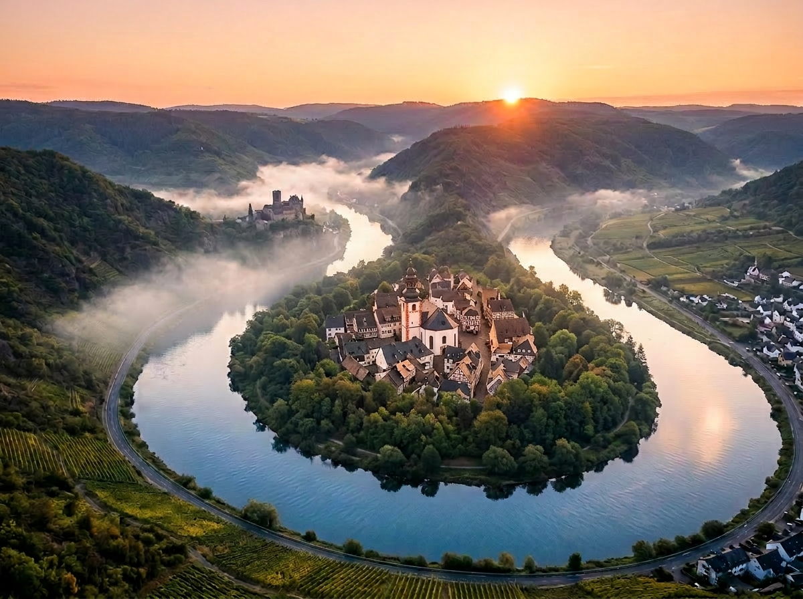
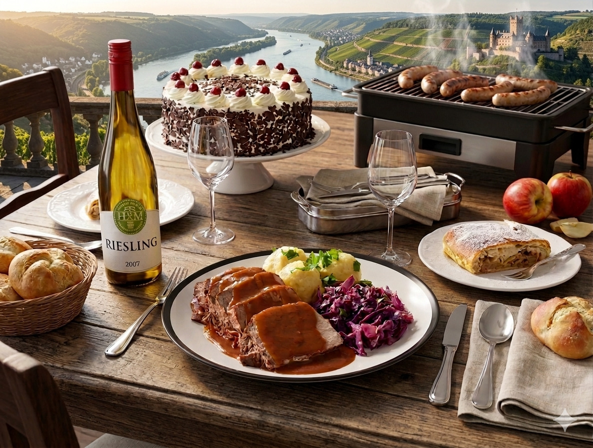

Valle del Rin
Adrentate a uno de los ríos con más historia del mundo
¿Que descubriras en el Valle del Rin?
El Valle del Rin serpentea a lo largo del río Rin, en el oeste de Alemania. En sus orillas se concentran algunos de los paisajes más emblemáticos del país, declarados Patrimonio de la Humanidad por la UNESCO.
🎉 🛳️ · Para quienes buscan ocio y naturaleza, el valle ofrece cruceros por el río, rutas de senderismo y paseos por pueblos como Bacharach o St. Goar con vistas espectaculares.
🍽️· La gastronomía es otro de sus grandes atractivos, especialmente sus vinos blancos como el famoso Riesling, que se pueden degustar en bodegas tradicionales de la región.
📚· En el ámbito histórico, destacan los numerosos castillos que dominan el valle, como el imponente Castillo de Rheinfels, testigos del pasado medieval de la zona.
Ocio, gastronomía e historia se combinan en el Valle del Rin para ofrecer una experiencia completa en uno de los paisajes más emblemáticos de Europa.
Ocio y naturaleza

El Valle del Rin es un destino ideal para quienes buscan disfrutar de la naturaleza y de actividades al aire libre. Sus paisajes, formados por colinas verdes, bosques y el propio río Rin, ofrecen un entorno perfecto para desconectar y explorar. Una de las experiencias más populares es realizar cruceros por el río, desde donde se pueden contemplar vistas panorámicas del valle y de los pequeños pueblos situados a lo largo de la ribera. También es un lugar perfecto para practicar senderismo o rutas en bicicleta, con numerosos caminos que atraviesan miradores naturales y zonas tranquilas rodeadas de vegetación. Además, pueblos como Bacharach o St. Goar invitan a pasear relajadamente y disfrutar del paisaje del valle.
Gastronomía
La gastronomía del Valle del Rin es otra de sus grandes atracciones. Es famoso por sus vinos blancos, especialmente el Riesling, que se pueden degustar en bodegas tradicionales de la región. Destaca además en platos salados como el Sauerbraten (carne vacuna marinada) o el Spätzle (pasta típica alemana). Por no mencionar los platos dulces como el Apfelstrudel (pastel de manzana) o el Käsekuchen (tarta de queso). La combinación de la gastronomía local con los vinos del valle hace que la experiencia culinaria en el Valle del Rin sea inolvidable, ofreciendo sabores auténticos que complementan perfectamente la belleza natural y la historia de la región.

Historia
El Valle del Rin tiene una rica historia medieval. Destacan los numerosos castillos que dominan el valle, como el imponente Castillo de Rheinfels, testigos del pasado medieval de la zona. Estos castillos fueron construidos para proteger la región y controlar el tráfico fluvial, y hoy en día se pueden visitar para conocer su historia y disfrutar de las vistas panorámicas del valle. Los castillos, junto con los pueblos históricos y el paisaje natural, hacen del Valle del Rin un destino fascinante para los amantes de la historia y la cultura. Desde sus fortalezas hasta sus leyendas, el valle ofrece un viaje al pasado que complementa perfectamente su belleza natural y su oferta de ocio y gastronomía.
Puntos de interés en el Valle del Rin
| Nombre | Tipo | Descripción |
|---|---|---|
| Castillo de Rheinfels | Castillo medieval | Imponente fortaleza sobre el río Rin, con vistas panorámicas. |
| Bacharach | Pueblo histórico | Pueblo con casas con entramado de madera y calles empedradas. |
| St. Goar | Pueblo y puerto | Encantador pueblo a orillas del Rin, con restaurantes y paseos en barco. |
| Viñedos del Rin | Naturaleza y gastronomía | Rutas de vino y catas de Riesling en viñedos tradicionales. |
| Castillo de Marksburg | Castillo medieval | Castillo bien conservado, visita guiada disponible, domina la región. |